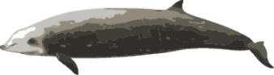

Mar Profundo

0 Metros
0 METROS DE PROFUNDIDADE

Peixe-boi

Salmão do Atlântico

Baixo listrado

Coral chifre de veado

Sardinha europeia

Urso Polar

Peixe Palhaço


Tang Azul

Caranguejo de veludo

Bacalhau do Atlântico

Cação espinhoso
Dragão Marinho Folhado
Mahi-mahi

Baixo manchado
Linguado

Craca

Baleia beluga
anchova

Grande Barracuda
Orca
Rainha Pargo

Arraia Pelágica

Leão Marinho

Tambor Preto

Leptoseris

Tubarão Touro

Tartaruga Marinha Verde
Cavala do Atlântico

Dentex
The Twilight Zone - A Zona Crepuscular

Murre de bico grosso

Enguia Lobo
peixe arinca

Cadeia de tubarão-gato

Alga
Lagosta Garra Terrível
Tartaruga Marinha Olive Ridly
Grande Tubarão Branco

golfinhos-nariz-de-garrafa

Lula Cacatua
Tubarão de goma
A 332 METROS, ESTE É O MAIS PROFUNDO QUE QUALQUER HUMANO JÁ MERGULHO. DEFINIDO POR AHMED GABR EM 2014.

Humano

Tubarão Azul

Lula vaga-lume
Atum Patudo

anjo do mar
Anjos do mar são lesmas marinhas majestosas que usam asas para se impulsionarem.

salmão chinook

Tubarão Mako

Pinguim Imperador

Peixe-espada

Náutilo

Peixe-lua

Coral de Bambu

Caranguejo-Aranha Japonês
O caranguejo-aranha japonês é o maior caranguejo conhecido, com envergadura máxima de 3,8 m.

Celacanto
Os celacantos eram considerados extintos até serem encontrados vivos em 1938.

Caranguejo Real

Polvo Gigante do Pacífico
Peixe-remo gigante
O peixe-remo gigante pode crescer até 11 m de comprimento.
Tamboril

Bacalhau do Pacífico

Marrus ortocana

Verme Vigtorniella
Cachalote
Tartaruga marinha de couro
As tartarugas marinhas de couro são as espécies de tartarugas marinhas mais antigas.

Baleia Bicuda de Baird
The Midnight Zone - A Zona da meia-noite
Nenhuma luz solar é capaz de atingir essa profundidade.
Muitas criaturas do fundo do mar criam luz elas próprias - também conhecida como bioluminescência.

Peixe pescador
Anglerfish have a large bioluminescent lure used to attract prey in the darkness.

Phronima

Áspero Laranja
O Orange Roughy pode viver até 200 anos. A vida marinha profunda geralmente tem expectativa de vida prolongada.
Anêmona-do-mar Vênus Flytrap
Peixe-bolha

Tubarão Frisado
Os tubarões-duendes são conhecidos como “fósseis vivos” porque são os únicos seres vivos espécie de uma linhagem que existe há 125 milhões de anos.
Coral chiclete

Peixe Machado
Peixe-dragão

Grande água-viva vermelha
Muitas espécies de águas profundas usam a cor vermelha como camuflagem, pois é a primeira cor para sair do espectro à medida que você se aprofunda.
Alabote da Groenlândia
Verme tubular gigante
Os vermes tubulares gigantes obtêm seus nutrientes das fontes hidrotermais.
As fontes hidrotermais são formadas a partir da passagem da água do mar rochas vulcânicas extremamente quentes. Eles liberam metais pesados que são tóxicos para a maioria dos animais.
Mas mesmo nessas condições extremas a vida especializada encontra um caminho para sobreviver.
Caranguejo Yeti
Os caranguejos Yeti vivem em fontes hidrotermais.
Os tubarões Sixgill passam o dia em águas profundas e a noite em águas rasas. Eles podem ser encontrados em todo o mundo.
Narval
Os narvais mergulham até essa profundidade até 15 vezes por dia em busca de alimento.

olho de galo

Caneta do Mar

Polvo Telescópico
Telescope Octopus são quase completamente transparentes e têm olhos salientes únicos.

Isópode Gigante
As refeições são raras no fundo do mar. As criaturas do fundo do mar adaptaram-se a isto - uma delas Isópode gigante em cativeiro ficou cinco anos sem comer.

Tubarão da Groenlândia

Lula Colossal
Lulas Colossais são as maiores espécies de lulas conhecidas. Eles podem atingem 10 metros de comprimento e pesam até 700 kg.


elefante marinho

Giganttactis

Quimeriformes

Teuthidodrilus
É uma lula ou um verme? É um verme.
engolidor-negro
Os engolidores negros podem engolir peixes inteiros - mesmo aqueles muito maiores do que eles próprios!
Peixe Víbora

Gastrópode de pé escamoso
O caracol escamoso recebe esse nome devido às placas de ferro em seu pé e a casca de ferro que ele faz de sulfeto de ferro.
Lula Vampiro
Lulas vampiro comem neve marinha - orgânica material que cai de águas mais rasas.
Peixe Frango Sem Cabeça
Frango sem cabeça são pepinos do mar com barbatanas em forma de asas que lhes permitem nadar.

Verme Zumbi
baleia de bico de Cuvier
As baleias de bico de Cuvier são os mamíferos que mergulham mais profundamente.
Esponja de vidro
Enguia Gulper

Água-viva Cósmica

Peixe-semáforo-comum

Esponja Harpa

Tubarão cortador de biscoitos
Este tubarão tira pedaços em forma de biscoito de suas presas.

Peixe Lagarto
Peixe-baleia flácido
Esta é a profundidade média do oceano.
Mas em alguns lugares é mais profundo.
Muito mais profundo.

Destroços do Titanic
Em 14 de abril de 1912, o Titanic afundou até seu local de descanso final em um profundidade de 3.800 metros.

Merluza-negra
A Toothfish da Patagônia possui proteínas anticongelantes em seus tecidos para evitar congelamento em temperaturas abaixo de zero.
Polvo Dumbo
The Abyssal Zone
A temperatura aqui é quase zero e poucos animais conseguem sobreviver à extrema pressão.